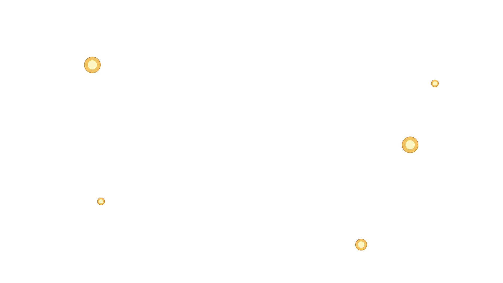
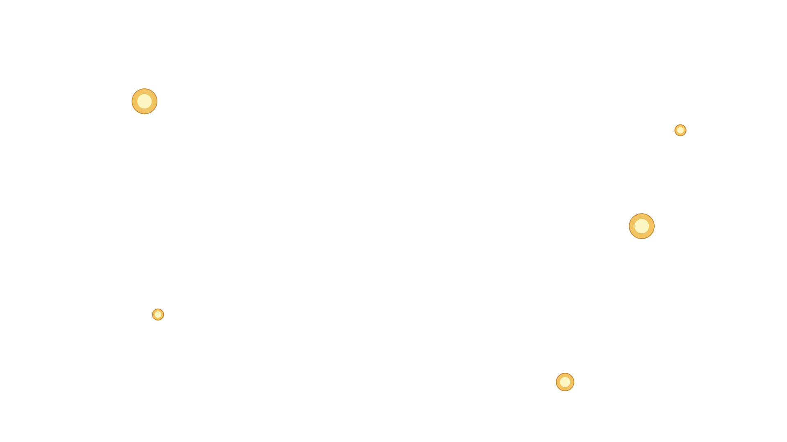
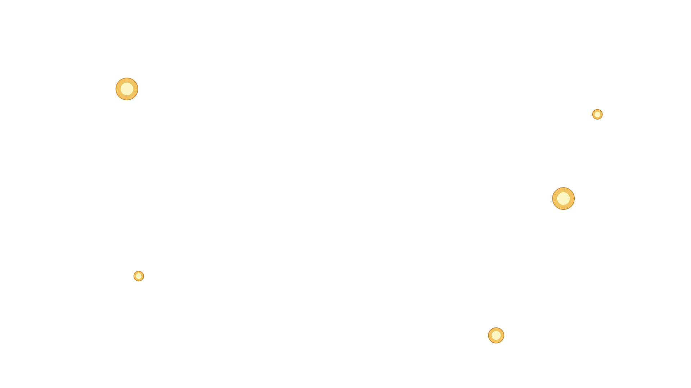
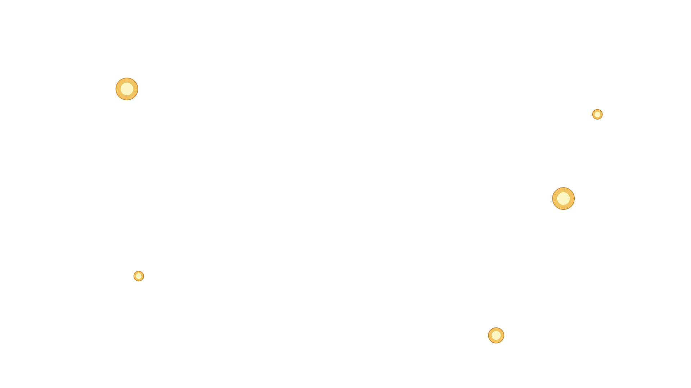

 

ทากมีลักษณะคล้ายปลิง ทากมักหายใจผ่านทางผิวหนัง บนตัวมีร่องเล็กซึ่งร่องจะกระจายกันทั่วเพื่อช่วยคงความชุ่มชื้นจากของเหลวที่ขับมา มีตัวดูด (sucker) ทั้งที่ด้านหัวและด้านท้าย ส่วนหัวซึ่งมีขนาดเล็กกว่าจะใช้ในการดูดเลือด ส่วนท้ายซึ่งมีขนาดอ้วนกว่าจะใช้ในการยึดเกาะผิว ปากของทากเป็นรูปแฉกสองหรือสามแฉกซึ่งสร้างรอยแผลแตกต่างกัน ปากสองแฉกจะสร้างแผลรูปตัว V ส่วนทากที่พบในป่าบ้านเราจะสร้างแผลคล้ายตัวอักษร Y

มีโอกาสพบเจอได้บ่อยในช่วงหน้าฝน อยู่ในที่ที่มีความชื้นสูง เช่น ป่าดิบหรือใกล้แหล่งน้ำ ซึ่งทากจะส่ายหัวของมันไปมา เพื่อจับทิศทางของเหยื่อจากแรงสั่นสะเทือนขณะเดิน เข้าไปหาโดยใช้ปุ่มดูดทั้งสองอันสลับกัน ขณะที่ดูดเลือดนั้นทากจะปล่อยสารสองตัว หนึ่งคือ ฮีสตามีน (Histamine) ซึ่งทำให้หลอดเลือดขยายตัวและรู้สึกชาทำให้เหยื่อไม่รู้สึกตัวว่าถูกกัด จากนั้นจึงปล่อยสารชื่อฮีรูดีน (Hirudin) ที่มีผลทำให้เลือดไม่แข็งตัวและทำให้เลือดไหลไม่หยุด
เมื่อถูกกัด ใช้เวลาสักพักกว่าเลือดจะหยุดไหล ประมาณ 20 นาทีหรือเป็นชั่วโมง ซึ่งขึ้นอยู่กับปริาณสารฮีรูดีนกับตำแหน่งที่ทากกัด เมื่อทากดูดเลือดเสร็จและคลายปากออก จากนั้นจะทิ้งรอยแผลรูปตัว Y ไว้บนผิว
01.
แต่งกายให้มิดชิด สวมถุงเท้ายาวทับขากางเกงหรือใส่ถุงเท้ากันทากที่จะช่วยกันไม่ให้ทากเข้าไปกัดเราในรองเท้าได้ เอาเสื้อใส่ในกางเกงและคอยสำรวจว่ามีทากไต่ขึ้นมาตามตัวหรือไม่
02.
ใช้ยากันทากชนิดสเปรย์ โดยฉีดที่เท้าหรือรองเท้าก่อนเข้าป่า ซึ่งต้องคอยฉีดพ่นบ่อยๆ หรือใช้ยาเส้นหรือยาฉุนพรมด้วยน้ำจนชื้น ทาบริเวณรองเท้า ขากางเกง หรือยัดไว้ในรองเท้า
03.
ใช้สบู่คาร์บอลิกซึ่งมีกลิ่นแรง เลือกเอาชนิดเหลวมาทาให้ทั่วขา หรือจะใช้เป็นแชมพูสระผมธรรมดา ทาไว้ที่รองเท้าหรือขา จากนั้นปล่อยให้แห้งก่อนเข้าป่า